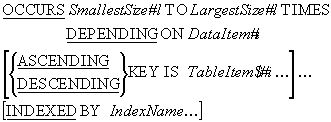
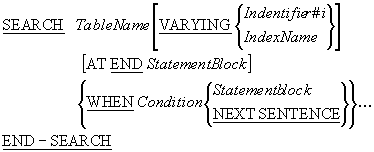
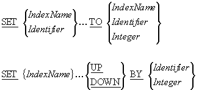
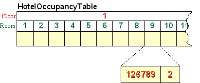
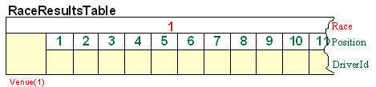
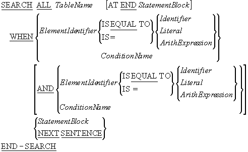

-
Introduction
Unit aims, objectives, prerequisites. -
OCCURS clause extensions
TheSEARCHandSEARCH ALLrequire that the description of the table to be searched contain a number of new extensions to theOCCURSclause. In this section the syntax of these new extensions is introduced -
The SEARCH verb
This section demonstrates how theSEARCHverb may be used to search through a table sequentially. -
Searching multi-dimension tables
TheSEARCHcannot be applied directly to search a multi-dimension table. This section demonstrates how to overcome this restriction by treating the multi-dimension table as a collection of single dimension tables and applying theSEARCHto each single dimension table. -
The SEARCH ALL verb
TheSEARCH ALLis used when a binary search is required. This section introduces the syntax of theSEARCH ALL, demonstrates how a binary search works and shows how theSEARCH ALLcan be used to search an ordered table.
Introduction
The task of searching a table to determine whether it contains a particular value is a common operation. The method used to search a table depends heavily on how the values in the table are organized.
For instance, if the values are not ordered, the table may only be searched sequentially, but if the values are ordered, then either a sequential or a binary search may be used.
In COBOL, the SEARCH verb is used for sequential
searches and the SEARCH ALL for binary searches.
This tutorial introduces the syntax and rules of operation of the
SEARCH and
SEARCH ALL verbs. It introduces the extensions to
the OCCURS clause that are required when the
SEARCH or
SEARCH ALL is used. It shows how the SET verb may be
used to alter the value of an index and it demonstrates how the
SEARCH and
SEARCH ALL may be used to search a table.
By the end of this unit you should -
-
Know the new
OCCURSclause entries that are required when theSEARCHis used to search a table. - Be able to use the
SEARCHto search a table. - Understand the restrictions that apply to manipulating a table index.
- Be able to use the SET verb to change the value of a table index.
-
Understand how the
SEARCHcan be used to search a multi-dimension table. -
Know the new
OCCURSclause entries that are required when theSEARCH ALLis used to search a table. - Understand how a binary search works.
- Introduction to COBOL
- Declaring data in COBOL
- Basic Procedure Division Commands
- Selection Constructs
- Iteration Constructs
- Introduction to Sequential files
- Processing Sequential files
- Print files and variable length records
- Sorting and Merging files
- Using Tables
- Creating Tables - syntax and semantics
Occurs clause extensions
When the SEARCH and
SEARCH ALL are used the normal table declarations are no
longer sufficient and the OCCURS clause must be extended
with the INDEXED BY phrase and, in the case of the
SEARCH ALL, by the
KEY IS phrase.
The full syntax of the OCCURS clause, including the
INDEXED BY and
KEY IS phrases is shown below.

Before the SEARCH or
SEARCH ALL can be used to search a table, the table must
be defined as having an index item associated with it.
The index is specified by the IndexName given in the
INDEXED BY phrase.
The index defined in a table declaration is associated with that table and is the subscript
which the SEARCH or
SEARCH ALL uses to access the table.
Using an index makes the searching more efficient. Since the index is linked to a particular table, the compiler, taking into account the size of the table, can choose the most efficient representation possible for the index and this speeds up the search.
The only entry that needs to be made for an IndexName is to use it in an
INDEXED BY phrase. There is no need to define a picture
clause for it, because the compiler handles its declaration automatically.
Because an index has a special internal representation it cannot be displayed and can only
be assigned a value, or have its value assigned, by the
SET verb. The
MOVE cannot be used with a table index.
Normal arithmetic cannot be performed on a table index. The
SET verb must be used to increment or decrement the
value of an index item.
While the SEARCH performs a sequential search on a
table, the SEARCH ALL performs a binary search. But a
binary search requires that the table is ordered on some key field. The key field may be the
element itself or, where the element is a group item, a field within the element.
Before a table can be searched with the SEARCH ALL, the
key field must be identified by using the KEY IS phrase
in the table declaration. As well as identifying the key field, the
KEY IS phrase specifies whether the table is in
ascending or descending order.
The SEARCH verb
When the values in a table are not ordered, the only way to find the item we seek is to
search through the table sequentially, element by element. In COBOL, the
SEARCH verb is used to search a table sequentially.

SEARCH rules
-
TableName must identify a data-item in the table hierarchy with both
OCCURSandINDEXED BYclauses. The index specified in theINDEXED BYclause of TableName is the controlling index of theSEARCH. -
The
SEARCHcan only be used if the table to be searched has an index item associated with it. An index item is associated with a table by using theINDEXED BYphrase in the table declaration. The index item is known as the table index. The table index is the subscript which theSEARCHuses to access the table.
SEARCH notes
-
The
SEARCHsearches a table sequentially starting at the element pointed to by the table index. -
The starting value of the table index is under the control of the programmer. The
programmer must ensure that, when the
SEARCHexecutes, the table index points to some element in the table (for instance, it cannot have a value of 0 or be greater than the size of the table). -
The
VARYINGphrase is only required when we require data-item to mirror the values of the table index. When theVARYINGphrase is used, and the associated data-item is not the table index, then the data-item is varied along with the index. -
The
AT ENDphrase allows the programmer to specify an action to be taken if the searched for item is not found in the table. -
When the
AT ENDis specified, and the index is incremented beyond the highest legal occurrence for the table (i.e. the item has not been found), then the statements following theAT ENDwill be executed and theSEARCHwill terminate. -
The conditions attached to the
SEARCHare evaluated in turn and as soon as one is true the statements following theWHENphrase are executed and theSEARCHends.
The SET verb is used for a number of unrelated purposes.
We have already seen how the SET verb may be used to set
a condition name to true. This section introduces the versions of the
SET verb used to manipulate table indexes.
Because an index item has a special internal representation designed to optimize searching,
it cannot be used in any type of normal arithmetic operation (ADD, SUBTRACT etc.) or even in a
MOVE or
DISPLAY statement. For index items, all these operations
must be handled by the SET verb.
The versions of the SET verb shown below are used to
assign a value to an index item, to assign the value of an index item to a variable, and to
increment or decrement the value of an index item.

The example program below accepts an upper case letter from the user and then uses the
SEARCH verb to searche a pre-filled table of letters to
find and display the position of the letter in the alphabet.
Because a table index can be tricky to manipulate (can't display it, can't move it) the
program uses the VARYING phrase to vary an ordinary
numeric value along with the index. When the letter is found in the table, this item will
contain the same value as the index and we can display it without the complications we might
encounter with the index item. For instance, to display the value of the index item we would
require following code -
SET LetterPos TO LetterIdx
MOVE LetterPos TO PrnPos
DISPLAY LetterIn, " is in position ", PrnPos
The example below is not meant to be a practical example of how to find the position of a letter in the alphabet. Nowadays, this task would be accomplished in much the same way as it would in C or Modula-2 except that, in COBOL, we would use the Intrinsic Function - ORD - as shown below.
COMPUTE PrnIdx = FUNCTION ORD(LetterIn) - FUNCTION ORD("A") + 1 >>SOURCE FORMAT IS FREE
IDENTIFICATION DIVISION.
PROGRAM-ID. LetterSearch.
AUTHOR. Michael Coughlan.
*> This program accepts an upper case letter from the
*> user and then displays which letter of the alphabet
*> it is.
DATA DIVISION.
WORKING-STORAGE SECTION.
01 LetterTable.
02 LetterValues.
03 FILLER PIC X(13)
VALUE "ABCDEFGHIJKLM".
03 FILLER PIC X(13)
VALUE "NOPQRSTUVWXYZ".
02 FILLER REDEFINES LetterValues.
03 Letter PIC X OCCURS 26 TIMES
INDEXED BY LetterIdx.
01 LetterIn PIC X.
01 LetterPos PIC 99.
01 PrnPos PIC Z9.
PROCEDURE DIVISION.
Begin.
DISPLAY "Enter the letter please - "
WITH NO ADVANCING
ACCEPT LetterIn
SET LetterIdx LetterPos TO 1
SEARCH Letter VARYING LetterPos
AT END DISPLAY "Letter " LetterIn " not found!"
WHEN Letter(LetterIdx) = LetterIn
MOVE LetterPos TO PrnPos
DISPLAY LetterIn, " is in position ", PrnPos
END-SEARCH
STOP RUN.
In this example below, we return to the County Tax Report problem. In the last question we
posed in the Using Tables tutorial we asked how the County Tax report problem could
be solved if the tax record contained a county name instead of a county code. We noted that
the county name had to be converted into a numeric value that we could use as a subscript.
In the Using Tables tutorial we used a PERFORM to
search through the table to find the numeric equivalent of the county name. In this example
we use the SEARCH.
The VARYING phrase is used in this
SEARCH example so that we don't have to set the
Idx to the CountyIdx. We can not use CountyIdx as a subscript for the
CountyTaxTable because it is bound to the CountyNameTable.
>>SOURCE FORMAT IS FREE
IDENTIFICATION DIVISION.
PROGRAM-ID. CountyTaxTable.
AUTHOR. Michael Coughlan.
ENVIRONMENT DIVISION.
INPUT-OUTPUT SECTION.
FILE-CONTROL.
SELECT TaxFile ASSIGN TO "CountyTaxes.DAT"
ORGANIZATION IS LINE SEQUENTIAL.
DATA DIVISION.
FILE SECTION.
FD TaxFile.
01 TaxRec.
88 EndOfTaxFile VALUE HIGH-VALUES.
02 PAYENum PIC 9(8).
02 County PIC X(9).
02 TaxPaid PIC 9(7)V99.
WORKING-STORAGE SECTION.
01 CountyTaxTable.
02 CountyTaxDetails OCCURS 26 TIMES.
03 CountyTax PIC 9(8)V99.
03 PayerCount PIC 9(7).
88 NoOnePaidTax VALUE ZEROS.
01 Idx PIC 99.
01 CountyTaxLine.
02 PrnCounty PIC X(9).
02 FILLER PIC X(7) VALUE " Tax = ".
02 PrnTax PIC $$$,$$$,$$9.99.
02 FILLER PIC X(12) VALUE " Payers = ".
02 PrnPayers PIC Z,ZZZ,ZZ9.
01 CountyNameTable.
02 TableValues.
03 FILLER PIC X(9) VALUE "Carlow".
03 FILLER PIC X(9) VALUE "Cavan".
03 FILLER PIC X(9) VALUE "Clare".
03 FILLER PIC X(9) VALUE "Cork".
03 FILLER PIC X(9) VALUE "Donegal".
03 FILLER PIC X(9) VALUE "Dublin".
03 FILLER PIC X(9) VALUE "Galway".
03 FILLER PIC X(9) VALUE "Kerry".
03 FILLER PIC X(9) VALUE "Kildare".
03 FILLER PIC X(9) VALUE "Kilkenny".
03 FILLER PIC X(9) VALUE "Laois".
03 FILLER PIC X(9) VALUE "Leitrim".
03 FILLER PIC X(9) VALUE "Limerick".
03 FILLER PIC X(9) VALUE "Longford".
03 FILLER PIC X(9) VALUE "Louth".
03 FILLER PIC X(9) VALUE "Mayo".
03 FILLER PIC X(9) VALUE "Meath".
03 FILLER PIC X(9) VALUE "Monaghan".
03 FILLER PIC X(9) VALUE "Offaly".
03 FILLER PIC X(9) VALUE "Roscommon".
03 FILLER PIC X(9) VALUE "Sligo".
03 FILLER PIC X(9) VALUE "Tipperary".
03 FILLER PIC X(9) VALUE "Waterford".
03 FILLER PIC X(9) VALUE "Westmeath".
03 FILLER PIC X(9) VALUE "Wexford".
03 FILLER PIC X(9) VALUE "Wicklow".
02 FILLER REDEFINES TableValues.
03 CountyName PIC X(9)
OCCURS 26 TIMES
INDEXED BY CountyIdx.
PROCEDURE DIVISION.
Begin.
OPEN INPUT TaxFile
MOVE ZEROS TO CountyTaxTable
READ TaxFile
AT END SET EndOfTaxFile TO TRUE
END-READ
PERFORM UNTIL EndOfTaxFile
SET CountyIdx Idx TO 1
SEARCH CountyName VARYING Idx
AT END DISPLAY "County " County " was not found"
WHEN CountyName(CountyIdx) = County
ADD TaxPaid TO CountyTax(Idx)
ADD 1 TO PayerCount(Idx)
END-SEARCH
READ TaxFile
AT END SET EndOfTaxFile TO TRUE
END-READ
END-PERFORM
PERFORM DisplayCountyTaxes VARYING Idx FROM 1 BY 1
UNTIL Idx GREATER THAN 26
CLOSE TaxFile
STOP RUN.
DisplayCountyTaxes.
IF NOT NoOnePaidTax(Idx)
MOVE CountyName(Idx) TO PrnCounty
MOVE CountyTax(Idx) TO PrnTax
MOVE PayerCount(Idx) TO PrnPayers
DISPLAY CountyTaxLine
END-IF.Searching multi-dimension tables
When the SEARCH verb is used, the target of the
SEARCH must be an item in the table with both an
OCCURS clause and an
INDEXED BY phrase. The index item specified in the
INDEXED BY phrase is the controlling index of the
search. The controlling index governs the submission of the elements, or element items, for
examination by the WHEN phrase of the
SEARCH. A SEARCH can
only have one controlling index.
Because a SEARCH can only have one controlling index it
can only be used to search a single dimension of a table at a time. If the table to be
searched is a multi-dimension table then the programmer must control the indexes of the
other dimensions.
For instance, suppose a hotel keeps an Occupancy Table showing which rooms in the hotel are currently occupied. The table might be described as -
01 HotelOccupanyTable.
02 Floor OCCURS 5 TIMES INDEXED BY Fidx.
03 Room OCCURS 25 TIMES INDEXED BY Ridx.
04 CustomerId PIC 9(6).
04 NumOfOccupants PIC 9.and we can represent this diagrammatically as follows -

Suppose we want to search the table to discover which room is occupied by customer 126789.
We can't use the SEARCH to search the whole
two-dimension table directly but we can use the
SEARCH to search the table floor by floor. In other
words, we can treat the table as if it were a collection of floor tables and we use the
SEARCH to search all the rooms in a particular floor
table.
The example program below demonstrates how the
SEARCH verb may be used to search the two-dimension
HotelOccupancyTable.
>>SOURCE FORMAT IS FREE
IDENTIFICATION DIVISION.
PROGRAM-ID. HotelSearch.
AUTHOR. Michael Coughlan.
ENVIRONMENT DIVISION.
INPUT-OUTPUT SECTION.
FILE-CONTROL.
SELECT OccupancyFile ASSIGN TO "Occupancy.DAT"
ORGANIZATION IS LINE SEQUENTIAL.
DATA DIVISION.
FILE SECTION.
FD OccupancyFile.
01 FloorRec PIC X(175).
88 EndOfFile VALUE HIGH-VALUES.
*>Each record represents one row of the table
WORKING-STORAGE SECTION.
01 HotelOccupanyTable.
02 Floor OCCURS 5 TIMES INDEXED BY Fidx.
03 Room OCCURS 25 TIMES INDEXED BY Ridx.
04 CustomerId PIC 9(6).
04 NumOfOccupants PIC 9.
01 CustId PIC 9(6).
01 RoomNum PIC 99.
01 FloorNum PIC 9.
01 FILLER PIC 9 VALUE 0.
88 CustomerFound VALUE 1.
PROCEDURE DIVISION.
Begin.
PERFORM LoadTable
DISPLAY "Enter Customer Id - " WITH NO ADVANCING
ACCEPT CustId
PERFORM VARYING Fidx FROM 1 BY 1 UNTIL Fidx > 5
OR CustomerFound
SET Ridx TO 1
SEARCH Room
WHEN CustomerId(Fidx,Ridx) = CustId
SET CustomerFound TO TRUE
SET FloorNum TO Fidx
SET RoomNum TO Ridx
DISPLAY "Customer " CustId
" is in room " FloorNum "-" RoomNum
END-SEARCH
END-PERFORM
IF NOT CustomerFound
DISPLAY "That customer is not in the hotel"
END-IF
STOP RUN.
LoadTable.
OPEN INPUT OccupancyFile
READ OccupancyFile
AT END SET EndOfFile TO TRUE
END-READ
PERFORM VARYING Fidx FROM 1 BY 1 UNTIL EndOfFile
MOVE FloorRec TO Floor(Fidx)
READ OccupancyFile
AT END SET EndOfFile TO TRUE
END-READ
END-PERFORM
CLOSE OccupancyFile.
This example demonstrates how the SEARCH may be used to
search either of the dimensions of a two-dimension table.
Suppose that we want to use a two-dimension table to hold the finishing positions of drivers in fifteen races. The table to hold these details may be described as -
01 RaceResultsTable.
02 Race OCCURS 15 TIMES INDEXED BY Ridx.
03 Venue PIC X(20).
03 RacePos OCCURS 50 TIMES INDEXED BY Pidx.
04 DriverId PIC 9(4).We can represent this diagramatically as follows -

In the example program below, the first dimension of the table is searched to find the results for a particular venue and then the second dimension, representing the results fo the race at that venue, are searched to find the finishing position of a particular driver.
>>SOURCE FORMAT IS FREE
IDENTIFICATION DIVISION.
PROGRAM-ID. RaceSearch.
AUTHOR. Michael Coughlan.
ENVIRONMENT DIVISION.
INPUT-OUTPUT SECTION.
FILE-CONTROL.
SELECT RaceResultsFile ASSIGN TO "RaceResults.DAT"
ORGANIZATION IS LINE SEQUENTIAL.
DATA DIVISION.
FILE SECTION.
FD RaceResultsFile.
01 VenueRec.
88 EndOfFile VALUE HIGH-VALUES.
02 RaceVenue PIC X(20).
02 Results PIC X(200).
*>Each record represents one row of the table
WORKING-STORAGE SECTION.
01 RaceResultsTable.
02 Race OCCURS 15 TIMES INDEXED BY Ridx.
03 Venue PIC X(20).
03 RacePos OCCURS 50 TIMES INDEXED BY Pidx.
04 DriverId PIC 9(4).
01 VenueName PIC X(20).
01 DriverIdNum PIC 9(4).
01 PosNum PIC 99.
PROCEDURE DIVISION.
Begin.
PERFORM LoadTable
DISPLAY "Enter Venue name - " WITH NO ADVANCING
ACCEPT VenueName
DISPLAY "Enter the drivers id - "WITH NO ADVANCING
ACCEPT DriverIdNum
SET Ridx TO 1
SEARCH Race
AT END DISPLAY "Venue not found."
WHEN Venue(Ridx) = VenueName
PERFORM SearchForDriver
END-SEARCH
STOP RUN.
SearchForDriver.
SET Pidx TO 1
SEARCH RacePos
AT END DISPLAY "Driver not in top 50 finishers"
WHEN DriverId(Ridx, Pidx) = DriverIdNum
SET PosNum TO Pidx
DISPLAY "In the race at " VenueName
DISPLAY "Driver " DriverIdNum
"finished in position " PosNum
END-SEARCH.
LoadTable.
OPEN INPUT RaceResultsFile
READ RaceResultsFile
AT END SET EndOfFile TO TRUE
END-READ
PERFORM VARYING Ridx FROM 1 BY 1 UNTIL EndOfFile
MOVE VenueRec TO Race(Ridx)
READ RaceResultsFile
AT END SET EndOfFile TO TRUE
END-READ
END-PERFORM
CLOSE RaceResultsFile.
In the example above an out-of-line perform was used for the second
SEARCH. This was not strictly necessary. The same result
could have been achieved with nested SEARCH statements.
For instance -
SET Ridx TO 1
SEARCH Race
AT END DISPLAY "Venue not found."
WHEN Venue(Ridx) = VenueName
SET Pidx TO 1
SEARCH RacePos
AT END DISPLAY "Driver not in top 50 finishers"
WHEN DriverId(Ridx, Pidx) = DriverIdNum
SET PosNum TO Pidx
DISPLAY "In the race at " VenueName
DISPLAY "Driver " DriverIdNum
" finished in position " PosNum
END-SEARCH
END-SEARCHThe SEARCH ALL verb
The SEARCH ALL is used when a binary search is required.
For this reason, the SEARCH ALL will only work on an
ordered table. The table must be ordered on some some key field. The key field may be the
element itself or, where the element is a group item, a field within the element. The key
field must be identified by using the KEY IS phrase in
the table declaration.

SEARCH ALL rules
-
The
OCCURSclause of the table to be searched must have aKEY ISclause in addition to anINDEXED BYclause. -
The ElementIdentifier must be the item referenced by the
KEY ISphrase of the table'sOCCURSclause. -
The ConditionName must have only one value and it must be associated with a
data-item referenced by the
KEY ISphrase of the table'sOCCURSclause.
SEARCH ALL notes
The
KEY IS phrase identifies the data-item upon which the
table is ordered.
When the SEARCH ALL is used, the programmer does not
need to set the table index to a starting value because the
SEARCH ALL controls it automatically.
Some problems using the SEARCH ALL
If the table to be searched is only partially populated, the
SEARCH ALL may not work correctly. If the table is
ordered in ascending sequence then, to get the
SEARCH ALL to function correctly, the unpopulated
elements must be filled with HIGH-VALUES. If the table
is in descending sequence, the unpopulated elements should be filled with
LOW-VALUES.
A binary search requires that the table to be searched is ordered on some key field. A binary search works by repeatedly dividing the search area into a top and bottom half, deciding which half contains the required item, and then making that half the new search area. It continues halving the search area like this until the required item is found or it discovers that the item is not in the table.
The algorithm for the binary search is -
PERFORM UNTIL ItemFound OR ItemNotInTable
COMPUTE Middle = (Lower + Upper) / 2
EVALUATE TRUE
WHEN Key(Middle) < SearchItem COMPUTE Lower = Middle + 1
WHEN Key(Middle) > SearchItem COMPUTE Upper = Middle -1
WHEN Key(Middle) = SearchItem SET ItemFound TO TRUE
WHEN Lower > Upper THEN SET ItemNotInTable TO TRUE
END-EVALUATE
END-PERFORM
The animation below demonstrates how the binary search works. It uses a search of the letter
table described in one of the examples above, as an example. To allow the table to be
searched with the SEARCH ALL the description of the
table has to be amended to include a KEY IS phrase as
shown below.
01 LetterTable.
02 LetterValues.
03 FILLER PIC X(13)
VALUE "ABCDEFGHIJKLM".
03 FILLER PIC X(13)
VALUE "NOPQRSTUVWXYZ".
02 FILLER REDEFINES LetterValues.
03 Letter PIC X OCCURS 26 TIMES
ASCENDING KEY IS Letter
INDEXED BY LetterIdx.
When the table description contains a KEY IS phrase we can search it using the following statement -
SEARCH ALL Letter
AT END DISPLAY "Letter " SearchLetter " was not found!"
WHEN Letter(LetterIdx) = SearchLetter
SET LetterPos TO LetterIdx
DISPLAY SearchLetter " is in position " LetterPos
END-SEARCH.

The full program for searching the letter table is given below.
>>SOURCE FORMAT IS FREE
IDENTIFICATION DIVISION.
PROGRAM-ID. LetterSearchAll.
AUTHOR. Michael Coughlan.
*> This program accepts an upper case letter from the
*> user and then displays which letter of the alphabet
*> it is.
DATA DIVISION.
WORKING-STORAGE SECTION.
01 LetterTable.
02 LetterValues.
03 FILLER PIC X(13)
VALUE "ABCDEFGHIJKLM".
03 FILLER PIC X(13)
VALUE "NOPQRSTUVWXYZ".
02 FILLER REDEFINES LetterValues.
03 Letter PIC X OCCURS 26 TIMES
ASCENDING KEY IS Letter
INDEXED BY LetterIdx.
01 SearchLetter PIC X.
01 LetterPos PIC 99.
PROCEDURE DIVISION.
Begin.
DISPLAY "Enter the letter please - "
WITH NO ADVANCING
ACCEPT SearchLetter
SET LetterIdx LetterPos TO 1
SEARCH ALL Letter
AT END DISPLAY "Letter " SearchLetter " was not found!"
WHEN Letter(LetterIdx) = SearchLetter
SET LetterPos TO LetterIdx
DISPLAY SearchLetter " is in position " LetterPos
END-SEARCH
STOP RUN.
In this example, we revisit the County Tax Report program once more. This time we use the
SEARCH ALL to search the pre-filled table of county
names.
The new parts of the program are coloured red.
>>SOURCE FORMAT IS FREE
IDENTIFICATION DIVISION.
PROGRAM-ID. CountyTaxTable4.
AUTHOR. Michael Coughlan.
ENVIRONMENT DIVISION.
INPUT-OUTPUT SECTION.
FILE-CONTROL.
SELECT TaxFile ASSIGN TO "CountyTaxes.DAT"
ORGANIZATION IS LINE SEQUENTIAL.
DATA DIVISION.
FILE SECTION.
FD TaxFile.
01 TaxRec.
88 EndOfTaxFile VALUE HIGH-VALUES.
02 PAYENum PIC 9(8).
02 County PIC X(9).
02 TaxPaid PIC 9(7)V99.
WORKING-STORAGE SECTION.
01 CountyTaxTable.
02 CountyTaxDetails OCCURS 26 TIMES.
03 CountyTax PIC 9(8)V99.
03 PayerCount PIC 9(7).
88 NoOnePaidTax VALUE ZEROS.
01 Idx PIC 99.
01 CountyTaxLine.
02 PrnCounty PIC X(9).
02 FILLER PIC X(7) VALUE " Tax = ".
02 PrnTax PIC $$$,$$$,$$9.99.
02 FILLER PIC X(12) VALUE " Payers = ".
02 PrnPayers PIC Z,ZZZ,ZZ9.
01 CountyNameTable.
02 TableValues.
03 FILLER PIC X(9) VALUE "Carlow".
03 FILLER PIC X(9) VALUE "Cavan".
03 FILLER PIC X(9) VALUE "Clare".
03 FILLER PIC X(9) VALUE "Cork".
03 FILLER PIC X(9) VALUE "Donegal".
03 FILLER PIC X(9) VALUE "Dublin".
03 FILLER PIC X(9) VALUE "Galway".
03 FILLER PIC X(9) VALUE "Kerry".
03 FILLER PIC X(9) VALUE "Kildare".
03 FILLER PIC X(9) VALUE "Kilkenny".
03 FILLER PIC X(9) VALUE "Laois".
03 FILLER PIC X(9) VALUE "Leitrim".
03 FILLER PIC X(9) VALUE "Limerick".
03 FILLER PIC X(9) VALUE "Longford".
03 FILLER PIC X(9) VALUE "Louth".
03 FILLER PIC X(9) VALUE "Mayo".
03 FILLER PIC X(9) VALUE "Meath".
03 FILLER PIC X(9) VALUE "Monaghan".
03 FILLER PIC X(9) VALUE "Offaly".
03 FILLER PIC X(9) VALUE "Roscommon".
03 FILLER PIC X(9) VALUE "Sligo".
03 FILLER PIC X(9) VALUE "Tipperary".
03 FILLER PIC X(9) VALUE "Westmeath".
03 FILLER PIC X(9) VALUE "Waterford".
03 FILLER PIC X(9) VALUE "Wexford".
03 FILLER PIC X(9) VALUE "Wicklow".
02 FILLER REDEFINES TableValues.
03 CountyName PIC X(9)
OCCURS 26 TIMES
ASCENDING KEY IS CountyName
INDEXED BY CountyIdx.
PROCEDURE DIVISION.
Begin.
OPEN INPUT TaxFile
MOVE ZEROS TO CountyTaxTable
READ TaxFile
AT END SET EndOfTaxFile TO TRUE
END-READ
PERFORM UNTIL EndOfTaxFile
SEARCH ALL CountyName
AT END DISPLAY "County " County " was not found"
WHEN CountyName(CountyIdx) = County
SET Idx TO CountyIdx
ADD TaxPaid TO CountyTax(Idx)
ADD 1 TO PayerCount(Idx)
END-SEARCH
READ TaxFile
AT END SET EndOfTaxFile TO TRUE
END-READ
END-PERFORM
PERFORM DisplayCountyTaxes VARYING Idx FROM 1 BY 1
UNTIL Idx GREATER THAN 26
CLOSE TaxFile
STOP RUN.
DisplayCountyTaxes.
IF NOT NoOnePaidTax(Idx)
MOVE CountyName(Idx) TO PrnCounty
MOVE CountyTax(Idx) TO PrnTax
MOVE PayerCount(Idx) TO PrnPayers
DISPLAY CountyTaxLine
END-IF.